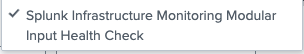
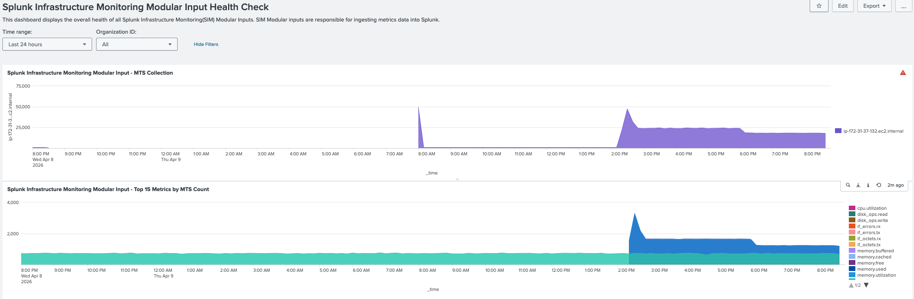

5. Validation
Overview
Once the inputs are enabled, you can validate that data is flowing correctly into the sim_metrics index using the built-in dashboards provided by the add-on.
Steps
1. Open the Add-on Dashboards
Navigate to:
Apps > Splunk Infrastructure Monitoring Add-on > Dashboards

2. Verify Data Ingestion
Open the relevant dashboard and confirm that metrics are appearing as expected.

You can also seach
Query sim_metrics index
| mstats avg("cpu.utilization") as sa_cpu_utilization, sum("memory.free") as sa_memory_free, avg("disk_ops.read") as sa_disk_read, avg("disk_ops.write") as sa_disk_write, avg("if_octets.rx") as sa_network_receive, avg("if_octets.tx") as sa_network_send, avg("if_errors.tx") as sa_network_error_tx, avg("if_errors.rx") as sa_network_error_rx where `itsi-cp-observability-indexes` AND cluster!=* by host.name span=15m | eval sa_memory_free_mb=sa_memory_free/1024/1024 | rename host.name as host_name | dedup host_name | table _time, host_name, sa_cpu_utilization, sa_memory_free_mb, sa_disk_read, sa_disk_write, sa_network_receive, sa_network_send, sa_network_error_tx, sa_network_error_rx
Streaming
| sim flow query="def weighted_duration(base, p, filter_, groupby):
error_durations = data(base + '.duration.ns.' + p, filter=filter_ and filter('sf_error', 'true'), rollup='max').mean(by=groupby, allow_missing=['sf_httpMethod'])
non_error_durations = data(base + '.duration.ns.' + p, filter=filter_ and filter('sf_error', 'false'), rollup='max').mean(by=groupby, allow_missing=['sf_httpMethod'])
error_counts = data(base + '.count', filter=filter_ and filter('sf_error', 'true'), rollup='sum').sum(by=groupby, allow_missing=['sf_httpMethod'])
non_error_counts = data(base + '.count', filter=filter_ and filter('sf_error', 'false'), rollup='sum').sum(by=groupby, allow_missing=['sf_httpMethod'])
error_weight = (error_durations * error_counts).sum(over='1m')
non_error_weight = (non_error_durations * non_error_counts).sum(over='1m')
total_weight = combine((error_weight if error_weight is not None else 0) + (non_error_weight if non_error_weight is not None else 0))
total = combine((error_counts if error_counts is not None else 0) + (non_error_counts if non_error_counts is not None else 0)).sum(over='1m')
return (total_weight / total)
filter_ = filter('sf_environment', '*') and filter('sf_service', '*') and filter('sf_error','*') and not filter('sf_dimensionalized', '*')
groupby = ['sf_service', 'sf_environment', 'sf_error']
weighted_duration('service.request', 'median', filter_, groupby).publish(label='medianLatency')"
| stats avg(_value) as medianLatency by sf_service sf_environment sf_organizationID _time sf_realm
| eval medianLatency=medianLatency/100000000/300 | eval SplunkApmEntity = sf_service + "-" + sf_environment + "-" + sf_organizationID + "-" + sf_realm
Alerts
index="o11y_alerts"
Troubleshooting
If data does not appear within 5–10 minutes:
- Check Organization ID — Go back to Configuration and verify the Organization ID is correctly set.
- Check input status — Ensure both inputs (
O11yHostsand your AWS EC2 clone) are Enabled inSettings > Data Inputs. - Review add-on logs — Search in Splunk:
index=_internal sourcetype=splunkd source=*SIM* (ERROR OR WARN)
✅ Success!
If data appears in the sim_metrics index and the dashboards show metrics, your O11y → ITSI data pipeline is working correctly.
You are now ready to use O11y metrics in ITSI KPI base searches, either via:
- The indexed
sim_metricsdata (for historical KPIs) - The real-time
simcommand (for live KPIs — recommended)